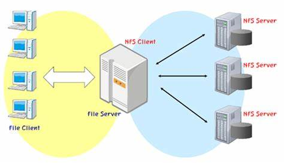

La era de los mainframes comenzó en la década de 1950 con la IBM 701, aunque el término se
popularizó más tarde en la década de 1960.
Los mainframes surgieron como los primeros grandes sistemas de computación electrónica, diseñados
para realizar cálculos complejos y procesar grandes volúmenes de datos. Empresas como IBM y UNIVAC
fueron pioneras en el desarrollo de estos sistemas. Los mainframes se convirtieron en el núcleo de
las operaciones de grandes corporaciones y organismos gubernamentales debido a su capacidad para
manejar múltiples tareas simultáneamente y soportar una gran cantidad de usuarios.
Los mainframes ofrecen una alta capacidad de procesamiento, fiabilidad y disponibilidad. Son capaces
de manejar grandes volúmenes de datos y transacciones simultáneamente, lo que los hace ideales para
aplicaciones críticas en finanzas, telecomunicaciones y otros sectores.
Su tamaño y costo son considerablemente altos. Además, requieren un mantenimiento especializado y
tienen una complejidad que puede ser un obstáculo para las organizaciones que buscan flexibilidad y
escalabilidad.
Sistema Multinivel
Los sistemas multinivel comenzaron a ganar popularidad en la década de 1980, con el desarrollo de
arquitecturas de software más sofisticadas.
Los sistemas multinivel están diseñados para organizar las aplicaciones en varias capas o niveles,
donde cada capa tiene una función específica. Este enfoque se originó como una solución para mejorar
la escalabilidad y la gestión de aplicaciones distribuidas, permitiendo que diferentes capas de una
aplicación (como la presentación, la lógica de negocio y la gestión de datos) se ejecuten en
servidores separados
La principal ventaja de los sistemas multinivel es su capacidad para escalar de manera eficiente y
manejar la complejidad de las aplicaciones. La separación de responsabilidades entre capas facilita
el mantenimiento y la actualización de la aplicación, al tiempo que mejora la eficiencia y el
rendimiento general del sistema.
La complejidad de los sistemas multinivel puede ser un desafío, ya que requiere una gestión
cuidadosa de las interacciones entre capas. Además, el costo de implementación y mantenimiento puede
ser alto debido a la necesidad de hardware y software especializado.
NFS (Network File System)

NFS fue introducido por Sun Microsystems en 1984.
NFS fue desarrollado para permitir que los sistemas de archivos en una red se compartan entre
diferentes computadoras como si fueran locales. Este sistema de archivos en red facilita el acceso
remoto a archivos y directorios, promoviendo la colaboración y el intercambio de datos en entornos
de red.
NFS proporciona una solución eficaz para compartir archivos en una red, permitiendo el acceso remoto
a datos con facilidad. Facilita la colaboración y la centralización de datos, reduciendo la
necesidad de duplicar archivos en múltiples máquinas.
La seguridad puede ser una preocupación, ya que los datos se transmiten a través de la red y pueden
estar expuestos a accesos no autorizados si no se implementan medidas de seguridad adecuadas.
Además, el rendimiento puede verse afectado por la latencia de la red y el tráfico.
Sistema Cliente/Servidor (C/S)
El modelo cliente/servidor se formalizó en la década de 1980.
El modelo cliente/servidor revolucionó la forma en que se diseñan las aplicaciones distribuidas. En
este modelo, el cliente realiza solicitudes de servicios, y el servidor proporciona esos servicios.
Este enfoque permite la separación entre la interfaz de usuario y la lógica de aplicación, lo que
facilita la escalabilidad y la gestión de recursos.
El modelo cliente/servidor permite una distribución eficiente de recursos y una administración
centralizada de datos y servicios. Facilita la escalabilidad, ya que se pueden añadir más servidores
para manejar una mayor carga, y permite la actualización de clientes sin afectar el servidor.
La complejidad de la red puede aumentar a medida que se añaden más clientes y servidores. Además, la
dependencia de la red puede ser una debilidad, ya que la conectividad y el rendimiento pueden verse
afectados por problemas de red.
Servicios en la nube
IaaS comenzó a tomar forma a mediados de la década de 2000. Amazon Web Services (AWS) lanzó su
primera oferta IaaS, Amazon EC2, en 2006.
IaaS representa el nivel más fundamental de servicios en la nube, proporcionando recursos de
computación virtualizados a través de la web. Esta categoría permite a los usuarios alquilar
infraestructura tecnológica, como servidores, almacenamiento y redes, en lugar de adquirir y
mantener hardware físico. La evolución de IaaS ha sido impulsada por la necesidad de flexibilidad y
escalabilidad en la gestión de infraestructura tecnológica.
IaaS ofrece una gran flexibilidad y escalabilidad, permitiendo a las organizaciones ajustar sus
recursos de acuerdo con la demanda. También reduce los costos asociados con la compra y
mantenimiento de hardware físico. Los usuarios solo pagan por los recursos que utilizan, lo que
puede resultar en un modelo de costo más eficiente.
La gestión de recursos y la configuración de la infraestructura pueden ser complejas y requerir
habilidades especializadas. Además, la seguridad y la privacidad de los datos pueden ser
preocupaciones, ya que los datos están alojados en servidores de terceros.